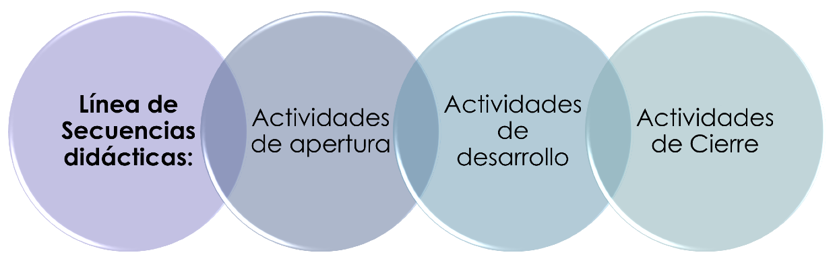

1
Planificación de la propuesta Didáctica de la Unidad.
Planteamiento del problema
El aprendizaje de las Ciencias Naturales es un proceso fundamental para la construcción de conocimientos científicos, pues posibilita la comprensión de los fenómenos naturales y la interpretación del entorno. Dentro de este campo, el estudio de los seres vivos requiere superar la adquisición memorística para avanzar hacia la comprensión de su diversidad y organización. A partir del diagnóstico aplicado a estudiantes de primer año mediante la plataforma Google Forms, se evidenció que la Unidad VII: Plantas metafitas presenta el menor porcentaje de aciertos (72.7 %). Aunque los estudiantes identifican funciones fisiológicas básicas como la fotosíntesis o absorción, un 27.3 % muestra confusión categórica al diferenciar a las plantas metafitas de organismos pertenecientes a otros reinos (animales y hongos). Por tanto, el problema radica en la necesidad de generar condiciones pedagógicas y estrategias metodológicas que faciliten la apropiación de la terminología taxonómica, morfología y clasificación biológica del contenido.
Por lo tanto, los resultados obtenidos mediante el diagnóstico realizado para identificar los contenidos que requieren mayor atención permitieron seleccionar las plantas metafitas como objeto de la propuesta didáctica. Esta selección evidencia la necesidad de considerar alternativas de planificación que respondan a las dificultades de comprensión identificadas y que permitan organizar el contenido desde una perspectiva didáctica. En este sentido, el problema no se limita al dominio de determinados conceptos, sino que plantea la necesidad de generar condiciones pedagógicas que favorezcan su comprensión mediante una adecuada articulación entre los fundamentos científicos del contenido, las estrategias metodológicas, las actividades de aprendizaje y los procesos de evaluación.
Justificación de la unidad didáctica
La presente unidad didáctica se diseña a partir de las necesidades de aprendizaje identificadas mediante el diagnóstico realizado en el área de Ciencias Naturales, donde el contenido de plantas metafitas presentó el menor porcentaje de logro, con un 72.7 % de respuestas correctas. Los resultados evidenciaron que, aunque existe dominio de algunas funciones fisiológicas de las plantas, persisten dificultades para reconocer el concepto de plantas metafitas, su clasificación y diferenciación respecto a organismos de otros reinos. Por esta razón, se considera necesario organizar el contenido mediante una propuesta didáctica que atienda estas dificultades y favorezca una comprensión más clara y significativa.
La unidad didáctica busca propiciar un proceso de enseñanza-aprendizaje en el que los estudiantes participen activamente en la construcción de sus conocimientos, superando una enseñanza basada únicamente en la memorización de conceptos. Para ello, se incorporan estrategias y actividades que permitan observar, comparar, clasificar, relacionar y explicar las características de las plantas metafitas a partir de situaciones y elementos del entorno. De esta manera, los contenidos se abordan de forma progresiva, articulando los conocimientos previos con nuevos aprendizajes y favoreciendo el desarrollo de habilidades propias del estudio de las Ciencias Naturales.
Asimismo, la unidad didáctica está sustentada en el Aprendizaje Basado en Problemas (ABP), una metodología que sitúa al estudiante como protagonista de su propio aprendizaje mediante el análisis de situaciones problemáticas que requieren indagar, reflexionar y proponer soluciones. En el estudio de las plantas metafitas, este enfoque permite plantear interrogantes relacionadas con sus características, clasificación, funciones y diferencias respecto a otros organismos, promoviendo la búsqueda de información, el intercambio de ideas y la construcción colectiva del conocimiento. De esta manera, el ABP favorece el pensamiento crítico, la autonomía y el trabajo colaborativo, al mismo tiempo que facilita la comprensión de los contenidos científicos y su relación con el entorno natural.
Resultados del diagnóstico
El diagnóstico aplicado permitió mapear con precisión los saberes previos de los 11 estudiantes participantes, evaluando áreas clave en el currículo de ciencias. En la Unidad II (La célula) de Biología, el grupo demostró una apropiación conceptual sobresaliente, alcanzando un 100 % de aciertos en los reactivos sobre herencia biológica, genes y transmisión de rasgos. De igual manera, en la Unidad VIII (La Tierra y el sistema solar) de Física, se registró un 98.2 % de aciertos promedio, determinando que los pequeños márgenes de error respondieron a distracciones en la lectura de reactivos y no a lagunas de conocimiento.
Por otro lado, la Unidad XI (Fundamentos de la química y la nutrición) obtuvo un 94.5 % de respuestas correctas; sin embargo, el análisis cualitativo reveló que un 18.2 % de los estudiantes tuvo dificultades para asociar la teoría de los carbohidratos con los alimentos cotidianos. Este hallazgo sugiere la presencia de un aprendizaje memorístico que requiere ser reforzado a través de ejemplos prácticos y contextualizados con la vida diaria.
La situación más crítica se concentró en la Unidad VII (Plantas metafitas) de Biología, la cual se posicionó como el área de atención prioritaria al obtener un 72.7 % de logro. Pese a que el alumnado comprende el funcionamiento fisiológico de la flora, persisten severas barreras para identificar la definición taxonómica de las metafitas, confundiéndolas con hongos o animales. Este déficit justifica plenamente la selección de este contenido como el núcleo de la presente propuesta de unidad didáctica.
Objetivo general
Comprender las características, clasificación e importancia de las plantas metafitas mediante actividades didácticas contextualizadas que favorezcan la construcción de aprendizajes significativos en Ciencias Naturales.
Objetivos específicos
· Identificar las características generales y la organización de las plantas metafitas mediante la observación y el análisis de ejemplos del entorno.
· Diferenciar las plantas metafitas de los organismos de los reinos Fungi y Animalia mediante la comparación de sus características morfológicas y taxonómicas.
· Reconocer la diversidad e importancia ecológica de las plantas metafitas mediante actividades de clasificación y reflexión sobre su función en el equilibrio ambiental.
Datos Generales:
Asignatura: Ciencias Naturales
Grado / Nivel:
Nombre de la Unidad: Unidad VII: Descubriendo el Reino Plantae.
Competencia de Grado: Aplica conocimientos científicos, principios biológicos e indagación escolar en el estudio de la diversidad de los seres vivos y sus interacciones, promoviendo la conservación de la biodiversidad en su entorno.
Eje Transversal: Educación Ambiental y Gestión del Riesgo.
| Número de la Unidad | Indicadores de logro. | Contenidos | Estrategias Didácticas y Actividades de Aprendizaje | Técnicas e Instrumentos de Evaluación |
| VII. | 1. Explica con precisión las características generales y la organización celular que definen a las plantas metafitas. |
Plantas metafitas - Concepto e importancia evolutiva. - Organización multicelular y nutrición autótrofa. |
Fase de inicio: exploración de saberes previos. La docente presentará la situación problemática: «En nuestro entorno encontramos plantas, hongos y animales. ¿Qué características nos permiten reconocer las plantas metafitas y diferenciarlas de los demás organismos?». Se realizará una lluvia de ideas para conocer las respuestas iniciales de los estudiantes. Herramienta didáctica: video educativo. Se presentará un video breve sobre las características generales de las plantas metafitas. Este recurso permitirá observar ejemplos, introducir los conceptos fundamentales y despertar el interés por el contenido. Herramienta didáctica: cuadro de similitud y diferencia. Los estudiantes completarán las columnas «Lo que conozco» y «Lo que quiero aprender». Servirá para identificar sus conocimientos previos y las dudas que orientarán las actividades.
Fase de Desarrollo (Construcción activa): • Cuadro comparativo inter-reinos: Trabajo colaborativo en parejas para diferenciar las metafitas de los hongos y animales. • Organizador gráfico: Elaboración de un mapa conceptual jerárquico sobre la clasificación taxonómica de las metafitas. • Práctica de observación: Uso de un herbario escolar o recorrido de campo para identificar estructuras vegetales.
Fase de Cierre: • Resolución de casos: Análisis grupal de fichas taxonómicas de especímenes locales. • Completamiento del Cuadro: Evaluación del aprendizaje con la columna "Lo que Aprendí". |
Técnicas de Evaluación: • Observación sistemática. • Análisis del desempeño estudiantil.
Instrumentos: • Diagnóstica: (valoración cualitativa). • Formativa: Lista de cotejo para el cuadro comparativo inter-reinos y el trabajo práctico. • Sumativa: Rúbrica analítica para evaluar el mapa conceptual. |
| 2. Establece diferencias morfológicas y taxonómicas entre las plantas metafitas y organismos de los reinos Fungi y Animalia. | Diferencias entre plantas metafitas, hongos y animales: organización celular, nutrición y características distintivas. | Inicio: La docente presentará imágenes de plantas, hongos y animales, y preguntará qué semejanzas y diferencias observan. Herramienta: tarjetas ilustradas. Contendrán imágenes de los organismos que se estudiarán y servirán para despertar el interés y activar los conocimientos previos. Desarrollo: Los estudiantes trabajarán en parejas para comparar los organismos mediante sus características. Herramienta: cuadro comparativo. Consistirá en una tabla con criterios de comparación; permitirá organizar la información y diferenciar los organismos. Esta actividad se vinculará con la investigación iniciada en «El caso de la planta misteriosa». Culminación: Cada pareja presentará sus conclusiones y justificará las diferencias identificadas. La docente aclarará las confusiones y reforzará los conceptos científicos. | ||
| 3. Clasifica especímenes vegetales de su entorno inmediato según sus estructuras de conducción y reproducción. |
Clasificación de las plantas metafitas y características de sus principales grupos; estructuras vegetales y diversidad. Reino Plantae. Plantas no vasculares (Briófitas). - Plantas vasculares sin semilla (Pteridófitas). - Plantas vasculares con semilla (Gimnospermas y Angiospermas). |
Inicio: La docente preguntará qué diferencias pueden existir entre los helechos, los musgos y las plantas con flores. Los estudiantes expresarán sus ideas iniciales. Desarrollo — Estrategia 2: Laboratorio vivo. Los estudiantes observarán ejemplares vegetales disponibles en el entorno escolar y registrarán las estructuras y características visibles. Herramienta: ficha de observación. Incluirá espacios para anotar las características, realizar dibujos y registrar semejanzas y diferencias. Servirá para recopilar evidencias de la observación directa. Estrategia 3: Rompecabezas taxonómico. Los equipos relacionarán tarjetas con los nombres, imágenes y características de diferentes grupos vegetales. Herramienta: tarjetas didácticas. Facilitarán la asociación y clasificación de los grupos. Herramienta complementaria: mapa conceptual. Permitirá organizar las características y las relaciones entre los conceptos estudiados. Culminación: Los equipos presentarán sus clasificaciones, justificarán las relaciones establecidas y corregirán posibles errores con la orientación docente. | ||
| 4. Reflexiona sobre la importancia ecológica de las plantas metafitas en el equilibrio ambiental de la región. | Diversidad vegetal, importancia ecológica y conservación de las plantas en el entorno escolar y comunitario. | Inicio: La docente preguntará qué plantas conocen del colegio y por qué es importante cuidarlas. Se explicará el propósito del recorrido. Desarrollo — Estrategia 4: Exploración del jardín del colegio. Los estudiantes se organizarán en equipos y observarán las plantas del jardín, registrando sus características e importancia. Herramienta: guía de exploración del jardín. Consistirá en una ficha con preguntas, espacios para dibujos y apartados para describir las plantas. Servirá para orientar el recorrido y relacionar los conocimientos con el entorno. Culminación: Los equipos compartirán sus observaciones y propondrán acciones para conservar la flora escolar. La docente orientará una reflexión sobre la importancia de las plantas para el equilibrio ambiental. |
2
Estrategias didácticas y actividades de aprendizaje
Para el desarrollo de la intervención didáctica sobre las plantas metafitas, se aplicarán cinco estrategias metodológicas organizadas de manera progresiva, con el propósito de partir de los conocimientos previos de los estudiantes, favorecer la observación directa, la clasificación, la resolución de problemas y la indagación científica. Estas pertenecen al grupo de las estrategias activas y basado en la resolución de problemas, lo que permiten que los estudiantes asuman un papel protagonista mediante la exploración, análisis, interacción, resolución de situaciones y producción de conocimientos. Por lo tanto, se desarrollan las siguientes estrategias metodológicas que responden directamente al diagnóstico.
Estrategia 1: “El caso de la planta misteriosa”
Inicio
La docente presenta a los estudiantes una imagen o un ejemplar vegetal sin identificar y plantea la siguiente situación: “Encontramos esta planta en nuestra comunidad. Necesitamos determinar a qué grupo pertenece y explicar qué características nos permiten reconocerla.” A partir de esta situación, se realizan preguntas como: ¿Qué tipo de planta creen que es?, ¿qué características observan?, ¿a qué grupo podría pertenecer? Los estudiantes expresan sus conocimientos previos y formulan sus primeras hipótesis.
Desarrollo
Los estudiantes se organizan en comunidades de aprendizaje y observan detenidamente la planta presentada. Cada grupo deberá describir sus características, formular una hipótesis sobre el grupo al que pertenece y buscar evidencias que permitan comprobarla. Para ello, comparan sus características con la información proporcionada sobre las plantas metafitas y sus diferentes grupos. Posteriormente, clasifican la planta y argumentan las razones de su decisión.
Cierre
Cada comunidad de aprendizaje presenta sus conclusiones ante el resto de la clase, explicando qué características utilizaron para identificar y clasificar la planta. La docente orienta la socialización, aclara posibles errores y refuerza los conocimientos relacionados con las características y clasificación de las plantas metafitas.
Producto
Ficha científica de identificación de la planta.
Evaluación
Se valorará la capacidad de los estudiantes para observar, describir, formular hipótesis, buscar evidencias, comparar, clasificar y argumentar sus respuestas.
Estrategia 2: “Laboratorio vivo”
Inicio
La docente explica que realizarán una actividad de observación directa de diferentes ejemplares vegetales disponibles en el jardín o entorno escolar. Antes de iniciar, se realizan preguntas para activar los conocimientos previos: ¿Qué diferencias existen entre las plantas que observamos?, ¿qué estructuras podemos identificar?, ¿todas las plantas presentan las mismas características? Se organizan los estudiantes en pequeños grupos y se les orienta sobre el cuidado y respeto de las plantas durante la actividad.
Desarrollo
Los estudiantes realizan un recorrido por el jardín o entorno escolar y observan diferentes ejemplares vegetales. Cada grupo registra sus observaciones en una ficha, tomando en cuenta:
Tipo de planta.
Características visibles.
Estructuras observadas.
Semejanzas.
Diferencias.
Posible grupo al que pertenece.
Importancia de la planta.
Durante la actividad, los estudiantes pueden realizar dibujos o anotaciones para complementar sus registros. La docente acompaña el proceso mediante preguntas orientadoras y brinda apoyo cuando sea necesario. Al finalizar la observación, los grupos comparan sus registros y analizan las semejanzas y diferencias encontradas entre los ejemplares.
Cierre
Cada grupo comparte los resultados de sus observaciones con sus compañeros. Se realiza una puesta en común para identificar las principales características encontradas y relacionarlas con la clasificación de las plantas metafitas. La docente realiza una retroalimentación final y destaca la importancia de observar directamente los organismos para comprender mejor sus características.
Producto
Ficha de observación y comparación de ejemplares vegetales.
Evaluación
Se evaluará la capacidad para observar, registrar información, identificar estructuras, establecer semejanzas y diferencias y relacionar las características observadas con el posible grupo de la planta.
Estrategia 3: “Rompecabezas taxonómico”
Inicio
La docente presenta a los estudiantes diferentes tarjetas previamente preparadas y mezcladas. Las tarjetas contienen características, nombre del grupo, ejemplos, imágenes y funciones de diferentes plantas. Se explica que el reto consiste en encontrar las correspondencias correctas y construir relaciones entre los diferentes elementos.
Desarrollo
Los estudiantes se organizan en equipos y reciben las tarjetas mezcladas. Cada equipo debe analizarlas, discutir entre sus integrantes y establecer las relaciones correspondientes entre nombre del grupo, características, ejemplo, imagen y función.
Por ejemplo:
Helecho → Pteridófita → vascular → sin semilla.
Los estudiantes deberán justificar por qué consideran que cada tarjeta corresponde a determinado grupo. Si existen diferentes opiniones dentro del equipo, deberán analizar nuevamente las características y consultar el material proporcionado para llegar a un acuerdo.
Esta actividad permitirá que los estudiantes no se limiten a memorizar los nombres de los grupos de plantas, sino que puedan relacionar las características con su clasificación.
Cierre
Cada equipo presenta el rompecabezas que construyó y explica algunas de las relaciones establecidas. Los demás estudiantes pueden realizar preguntas o señalar coincidencias y diferencias. Finalmente, la docente revisa las respuestas, corrige posibles errores y realiza una síntesis de las principales características que permiten diferenciar y clasificar los grupos de plantas metafitas.
Producto
Rompecabezas taxonómico correctamente organizado y justificado.
Evaluación
Se evaluará la capacidad de los estudiantes para identificar características, establecer relaciones, clasificar correctamente los grupos de plantas y justificar sus respuestas, además del trabajo colaborativo.
Estrategia 4: Exploración del jardín del colegio para conocer los diferentes tipos de plantas.
Inicio:
La docente inicia la actividad realizando preguntas generadoras a los estudiantes, como: ¿Qué plantas conocen?, ¿qué plantas podemos encontrar en nuestro colegio?, ¿todas las plantas son iguales? Y ¿qué características podemos observar en ellas? Posteriormente, se les explica que realizarán un recorrido por el jardín del colegio para observar directamente las plantas y reconocer algunas de sus características.
Desarrollo:
Los estudiantes se organizan en pequeños grupos y realizan un recorrido por el jardín del colegio. Durante la exploración observan diferentes plantas, prestando atención a sus raíces, tallos, hojas, flores, frutos y semillas, cuando estas sean visibles. Cada grupo registra sus observaciones mediante dibujos o una pequeña ficha, anotando las características que logren identificar. La docente acompaña el recorrido, realiza preguntas y orienta a los estudiantes para relacionar lo observado con el contenido de plantas metafitas.
Cierre:
Al finalizar el recorrido, los grupos comparten con sus compañeros lo que observaron. Cada grupo presenta una de las plantas encontradas y explica algunas de sus características. Finalmente, la docente retoma las respuestas y explica que las plantas observadas pertenecen al grupo de las metafitas, destacando las características que permiten reconocerlas.
Evaluación:
Se evaluará mediante la participación durante el recorrido, la capacidad para observar y describir las características de las plantas, el registro realizado por cada grupo y la explicación de los resultados obtenidos.
Estructura de la secuencia didáctica
De acuerdo con Díaz-Barriga (2013), una secuencia didáctica tiene una estructura que contempla tres escenarios base (ver figura 1). Las actividades de apertura se asocian con una breve introducción al tema o una pregunta detonadora para dar entrada a la dinámica del tema. Inclusive una dinámica para romper el hielo puede incluirse.

figura 1(Díaz-Barriga, 2013)
Las actividades de desarrollo se enfocan en el detalle del tema a tratar, se pueden integrar lecturas, videos, simuladores, entre otros. Por último, las actividades de cierre buscan integrar los conceptos fundamentales del tema, un resumen, una infografía, una actividad o tarea y su correspondiente entregable.
3
Fase inicial
Exploración de conocimientos previos en el que se utilizan:
Lluvia de ideas;
Imágenes;
Preguntas generadoras; por ejemplo ¿Todas las plantas que conocemos pertenecen al mismo grupo? ¿Cómo podríamos saberlo?
Fase de desarrollo
En esta fase se desarrollan actividades de:
Observación;
Comparación;
Clasificación;
Investigación;
Trabajo colaborativo;
Resolución de problemas;
Construcción de mapas conceptuales;
Elaboración de fichas científicas.
La fase debe conducir progresivamente desde las características generales hasta la clasificación y posteriormente hacia la importancia ecológica.
Fase de cierre
Posteriormente se realizan la socialización, exposición de mapa conceptual, reflexiones de lo aprendido y propuesta de conservación. Además, la pregunta de cierre puede ser:
¿Qué sabíamos sobre las plantas al comenzar y qué podemos explicar ahora que antes no podíamos?
Evaluación dentro de la secuencia didáctica
La evaluación dentro de la secuencia didáctica debe entenderse como un proceso continuo que permite obtener evidencias sobre lo que los estudiantes saben, comprenden y son capaces de realizar. Su función no consiste únicamente en asignar una calificación, sino también en proporcionar información para orientar las actividades de enseñanza y aprendizaje.
La UNESCO (s. f), señala que la evaluación del aprendizaje puede cumplir funciones diagnósticas, formativas y sumativas. La evaluación diagnóstica permite identificar conocimientos iniciales y áreas que requieren atención; la formativa acompaña el proceso de aprendizaje; y la sumativa permite valorar los conocimientos y habilidades alcanzados al finalizar un periodo determinado.
Funciones
La evaluación cumple diferentes funciones dentro de la secuencia didáctica. En primer lugar, permite conocer el punto de partida del estudiante; posteriormente, proporciona información durante el desarrollo de las actividades y, finalmente, permite valorar los aprendizajes alcanzados. (Huamanlazo, 2020). Por esta razón, la evaluación debe estar articulada con los objetivos y las actividades de aprendizaje. No debe considerarse como una acción independiente ubicada únicamente al final de la unidad, sino como un proceso que acompaña las diferentes fases de la propuesta.
Diagnóstica
La evaluación diagnóstica se realiza antes de iniciar o durante las primeras actividades de una unidad con el propósito de identificar los conocimientos previos, ideas, habilidades y posibles dificultades del estudiantado.
Huamanlazo plantea que este tipo de evaluación permite conocer el conocimiento y las habilidades de base de los estudiantes y proporciona información útil para mejorar la planificación de la enseñanza.
Formativa
La evaluación formativa acompaña el desarrollo de las actividades y permite identificar los avances, dificultades y necesidades de los estudiantes mientras ocurre el aprendizaje. Además, la evaluación formativa puede realizarse mediante discusiones, observaciones y reflexiones, permitiendo identificar brechas de aprendizaje y tomar decisiones pedagógicas durante el proceso.
Sumativa
La evaluación sumativa se realiza al finalizar una etapa de aprendizaje y permite valorar el nivel de logro alcanzado en relación con los objetivos propuestos. Puede incluir diferentes evidencias y no necesariamente debe limitarse a una prueba escrita. De esta manera, la evaluación sumativa suele realizarse al finalizar una unidad, semestre o año académico y permite realizar una valoración global de los conocimientos y habilidades desarrollados.
Técnicas e instrumentos
Las técnicas de evaluación corresponden a los procedimientos utilizados para obtener información sobre el aprendizaje, mientras que los instrumentos permiten registrar y valorar las evidencias obtenidas. La selección del instrumento debe guardar relación con aquello que se pretende evaluar.
Lista de cotejo
La lista de cotejo es un instrumento que permite verificar la presencia o ausencia de determinados criterios relacionados con una actividad, producto o desempeño. “La lista de cotejo es un instrumento que relaciona acciones sobre tareas específicas, organizadas de manera sistemática para valorar la presencia o ausencia de estas” (Sierra González et al., 2022, p. 218). Explican que este instrumento relaciona acciones específicas organizadas sistemáticamente para valorar su presencia o ausencia durante el proceso de aprendizaje.
Una de sus características es que puede utilizar una escala sencilla, por ejemplo: sí/no, logrado/no logrado, cumple/no cumple. Además, puede utilizarse con propósitos diagnósticos, formativos o sumativos.
Rúbrica
La rúbrica es un instrumento que establece criterios y niveles de desempeño para valorar una actividad, producto o competencia. Según Sierra et al. (2022), la rúbrica permite definir los desempeños específicos que serán valorados y establecer diferentes niveles de logro. De otro modo, existen rúbricas holísticas y analíticas. La primera realiza una valoración global del desempeño, mientras que la segunda permite valorar por separado diferentes criterios.
Evaluación como proceso de retroalimentación y mejora
La evaluación adquiere mayor utilidad cuando la información obtenida se utiliza para orientar nuevas acciones de aprendizaje. Por ello, la retroalimentación debe estar presente durante el desarrollo de la secuencia didáctica y no únicamente después de asignar una calificación. De esta manera, la retroalimentación permite comunicar a los estudiantes sus avances, señalar dificultades y orientar los pasos que pueden seguir para mejorar. En este sentido, la evaluación formativa se relaciona directamente con la toma de decisiones pedagógicas, ya que la información obtenida durante las actividades permite ajustar explicaciones, ejemplos, agrupamientos y estrategias. Por tanto, evaluar no significa solamente determinar cuánto aprendió el estudiante, sino utilizar las evidencias obtenidas para orientar el proceso y generar nuevas oportunidades de aprendizaje.
4
El diseño se estructura en tres momentos principales:
Inicio: recuperación de conocimientos previos mediante preguntas generadoras, lluvia de ideas e imágenes: Para explorar los conocimientos previos se utilizarán preguntas como:
¿Qué plantas conocemos en nuestra comunidad?
¿Todas las plantas son iguales?
¿Cómo podemos diferenciar una planta de un hongo?
¿Qué características permiten reconocer una planta?
¿Todas las plantas producen semillas?
¿Qué plantas conocemos que no tienen flores?
¿Cómo se clasifican las plantas?
¿Por qué son importantes las plantas para los seres vivos?
¿Qué ocurriría si desaparecieran las plantas de nuestro entorno?
¿Qué esperamos aprender sobre las plantas metafitas?
Estas preguntas permiten recuperar conocimientos previos y generar una situación de interés antes de presentar los conceptos científicos.
Desarrollo: construcción de aprendizajes mediante observación, comparación, clasificación, trabajo colaborativo, ABP, elaboración de mapas conceptuales y análisis de ejemplares.
Cierre: aplicación de los aprendizajes mediante resolución de casos, socialización de resultados, reflexión y evaluación final.
Al finalizar las actividades, los estudiantes socializarán los resultados obtenidos y compararán sus conocimientos iniciales con los aprendizajes construidos durante la unidad.
Lo que conozco - Lo que quiero aprender - Lo que aprendí.
Posteriormente responderán individualmente:
¿Qué sabía sobre las plantas metafitas al comenzar la unidad y qué puedo explicar ahora que antes no podía explicar?
Finalmente, cada grupo presentará una conclusión sobre la importancia de las plantas metafitas y una acción concreta para contribuir a la conservación de la flora de su entorno.
Esta estructura permite mantener una progresión desde lo conocido hacia lo nuevo y posteriormente hacia la aplicación de los aprendizajes.